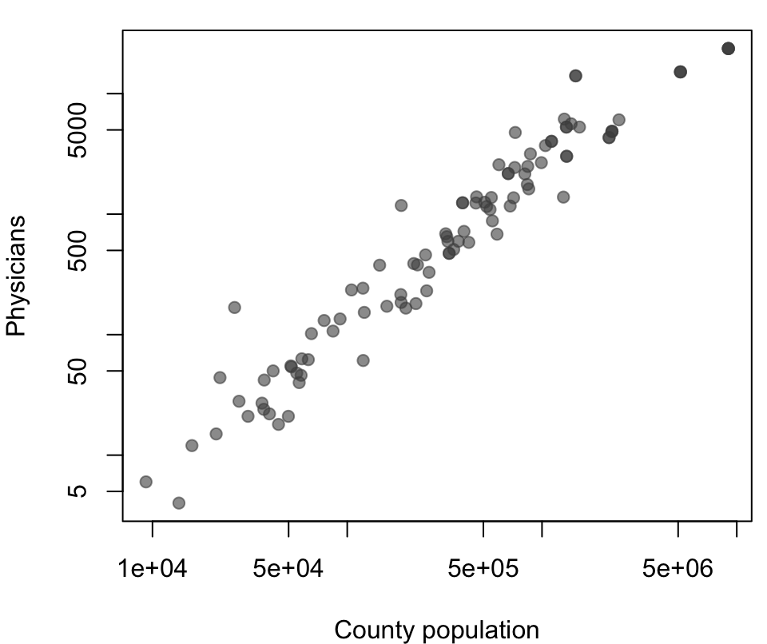
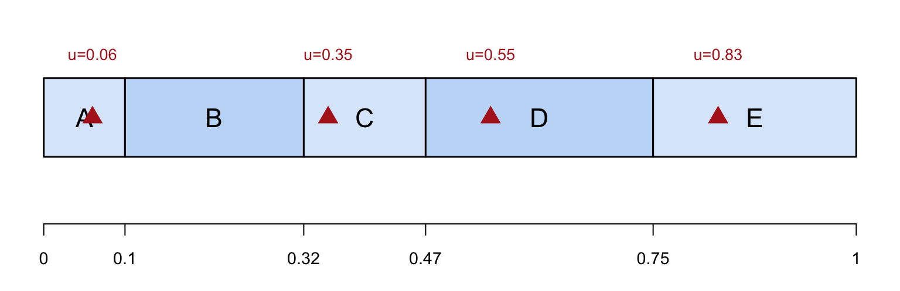
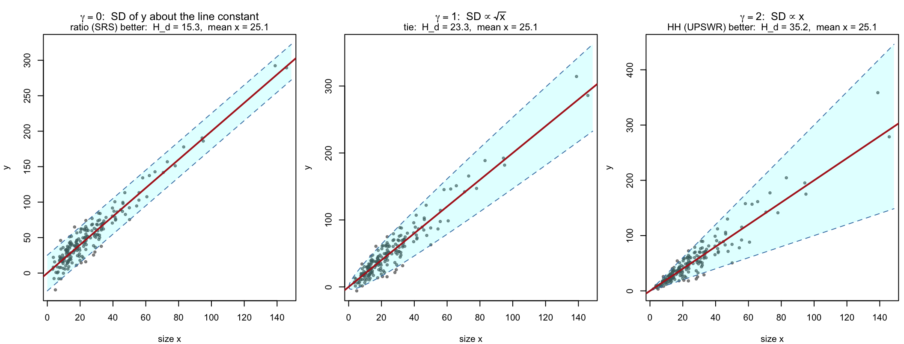

Introduction to Unequal Probability Sampling
2026-11-23
Suppose n>1 and we sample with replacement: the selection probabilities do not change after the first draw. Let \psi_i = P(\text{select unit } i \text{ on any given draw}),\qquad \sum_{i=1}^N\psi_i=1 .
Draw n units with replacement (a unit may be drawn more than once). The sample \mathcal R (not \mathcal S) is the list of the n draws, including repeats: for example, n=10, \mathcal R=\{D,D,D,C,C,D,C,A,B,B\} A common choice, probabilities proportional to size (PPS), with a size variable x_i>0 known for every unit: \psi_i = \frac{x_i}{t_x},\qquad t_x=\sum_{k=1}^N x_k .

Figure 1
Divide [0,1] into segments of length \psi_1,\ldots,\psi_N. Draw u\sim\text{Uniform}(0,1) (red triangles); the segment that u falls into determines the selected unit. In R: sample(1:N, size = n, prob = psi, replace = TRUE).
With \psi_i=x_i/t_x, define for every unit b_i=\frac{y_i}{x_i},\qquad B=\frac{t_y}{t_x}=\frac{\bar y_U}{\bar x_U},\qquad \bar x_U=\frac{t_x}{N}. B=\sum x_ib_i/\sum x_i is the x-weighted mean of the b_i, and \bar y_U=\bar x_U\,B,\qquad t=t_x\,B . Estimating B is enough: build \hat B, then multiply by \bar x_U or t_x.
Let b_j^* be the ratio b of the unit selected on draw j (the star: it is indexed by the draw, so it is random, while b_1,\ldots,b_N are fixed numbers). It is a discrete random variable with distribution
| Unit selected on draw j | 1 | 2 | \cdots | N |
|---|---|---|---|---|
| Value of b_j^* | b_1 | b_2 | \cdots | b_N |
| Probability | \psi_1=x_1/t_x | \psi_2=x_2/t_x | \cdots | \psi_N=x_N/t_x |
Draws are with replacement, so b_1^*,\ldots,b_n^* are IID with this distribution.
E(b_j^*)=\sum_{i=1}^N\psi_i\,b_i=\sum_{i=1}^N\frac{x_i}{t_x}\frac{y_i}{x_i}=\frac{t}{t_x}=B,\qquad S_{b^*}^2=V(b_j^*)=\sum_{i=1}^N\psi_i(b_i-B)^2 . A single draw is unbiased for B, and precise when the b_i are nearly equal, i.e. y_i\propto x_i.
The HH estimator is the mean of the n IID observations b_j^* (the mean of the ratios): \boxed{\hat B_{\mathrm{HH}}=\bar b^*=\frac1n\sum_{j=1}^n b_j^*},\qquad E(\hat B_{\mathrm{HH}})=B, and its variance is that of one draw divided by n: V(\hat B_{\mathrm{HH}})=\frac{S_{b^*}^2}{n}=\frac1n\sum_{i=1}^N\psi_i(b_i-B)^2 . No finite population correction: the draws are independent.
The sample variance of the b_j^* is unbiased for S_{b^*}^2: \boxed{\widehat{\mathrm{SE}}(\hat B_{\mathrm{HH}})=\frac{s_{b^*}}{\sqrt n}},\qquad s_{b^*}^2=\frac{1}{n-1}\sum_{j=1}^n(b_j^*-\bar b^*)^2 .
| Quantity | Estimate | Estimated SE |
|---|---|---|
| Ratio B=t/t_x | \hat B_{\mathrm{HH}} | s_{b^*}/\sqrt n |
| Mean per unit \bar y_U=\bar x_UB | \bar x_U\,\hat B_{\mathrm{HH}} | \bar x_U\,s_{b^*}/\sqrt n |
| Total t=t_xB | t_x\,\hat B_{\mathrm{HH}} | t_x\,s_{b^*}/\sqrt n |
From \hat B_{\mathrm{HH}} (PPS, \psi_i=x_i/t_x, so t_x/x_i=1/\psi_i): \begin{aligned} \hat t_{\mathrm{HH}}&=t_x\hat B_{\mathrm{HH}}\\ &=t_x\,\frac1n\sum_{j=1}^n b_j^*\\ &=\frac1n\sum_{j=1}^n t_x\frac{y_j^*}{x_j^*}\\ &=\frac1n\sum_{j=1}^n\frac{y_j^*}{\psi_j^*} \end{aligned}
Writing the sum over the draws in \mathcal R (repeats included): \hat t_{\mathrm{HH}}=\frac1n\sum_{i\in\mathcal R}\frac{y_i}{\psi_i}=\sum_{i\in\mathcal R}w_i\,y_i, \boxed{w_i=\frac{1}{n\,\psi_i}}
From V(\hat B_{\mathrm{HH}})=S_{b^*}^2/n, using t_xb_i=y_i/\psi_i and t_xB=t, so that t_x(b_i-B)=y_i/\psi_i-t: \begin{aligned} V(\hat t_{\mathrm{HH}})&=t_x^2\,V(\hat B_{\mathrm{HH}})=\frac1n\sum_{i=1}^N\psi_i\,t_x^2(b_i-B)^2\\ &=\boxed{\frac1n\sum_{i=1}^N\psi_i\Big(\frac{y_i}{\psi_i}-t\Big)^2} \end{aligned} Likewise t_x(b_j^*-\bar b^*)=y_j^*/\psi_j^*-\hat t_{\mathrm{HH}}, so the estimated variance t_x^2s_{b^*}^2/n is \hat V(\hat t_{\mathrm{HH}})=\boxed{\frac{1}{n(n-1)}\sum_{j=1}^n\Big(\frac{y_j^*}{\psi_j^*}-\hat t_{\mathrm{HH}}\Big)^2} Both hold for any \psi_i, with no finite population correction.
Take the normalized size \tilde x_i=\psi_i, so that t_{\tilde x}=\sum_i\tilde x_i=1 and \tilde x_i/t_{\tilde x}=\psi_i. Its ratios and population ratio are \tilde b_i=\frac{y_i}{\tilde x_i}=\frac{y_i}{\psi_i},\qquad \tilde B=\frac{t}{t_{\tilde x}}=t , so the HH estimator of \tilde B is the HH estimator of the total: \hat{\tilde B}_{\mathrm{HH}}=\frac1n\sum_{j=1}^n\frac{y_j^*}{\psi_j^*}=\hat t_{\mathrm{HH}},\qquad \hat t_{\mathrm{HH}}=t_{\tilde x}\,\hat{\tilde B}_{\mathrm{HH}}=\hat{\tilde B}_{\mathrm{HH}} .
An AI company has N=6 customers; the tokens x_i (millions) are known for all, the revenue y_i (thousand dollars) is only observed for the sampled customers. Draw n=5 customers with replacement, \psi_i=x_i/t_x (t_x=100, \bar x_U=16.67). The sample is \mathcal R=\{F,E,F,D,C\}:
| Draw j | Customer | x_j^* | y_j^* | b_j^*=y_j^*/x_j^* | b_j^*-\bar b^* | (b_j^*-\bar b^*)^2 |
|---|---|---|---|---|---|---|
| 1 | F | 40 | 190 | 4.7500 | -0.1417 | 0.020069 |
| 2 | E | 30 | 155 | 5.1667 | 0.2750 | 0.075625 |
| 3 | F | 40 | 190 | 4.7500 | -0.1417 | 0.020069 |
| 4 | D | 15 | 70 | 4.6667 | -0.2250 | 0.050625 |
| 5 | C | 8 | 41 | 5.1250 | 0.2333 | 0.054444 |
| Sum | 24.4583 | 0 | 0.220833 |
\hat B_{\mathrm{HH}}=\bar b^*=\frac{24.4583}{5}=4.8917,\qquad s_{b^*}^2=\frac{0.220833}{4}=0.0552,\quad s_{b^*}=0.235
| Quantity | Estimate | Estimated SE |
|---|---|---|
| Revenue per million tokens B | 4.8917 | 0.2350/\sqrt5=0.1051 |
| Mean revenue per customer | 16.67\times4.8917=81.53 | 16.67\times0.1051=1.75 |
| Total revenue | 100\times4.8917=489.2 | 100\times0.1051=10.5 |
In R, with the sample as a data set token (one row per draw, columns y and x), upswr_est returns the estimate, SE and CI of B; multiply by \bar x_U or t_x for the mean or the total:
The total line and the last line both give \hat t_{\mathrm{HH}}=489.2 (SE 10.5); the last uses the normalized size \tilde x_i=\psi_i.
statepop.csv)
With the population in thousands, b_j^* = physicians per 1,000 people of the county on draw j:
| Quantity | HH estimate | SE |
|---|---|---|
| Physicians per 1,000 people, \hat B_{\mathrm{HH}} | 2.24 | 0.16 |
| Physicians per county, \bar x_U\hat B_{\mathrm{HH}} | 181.6 | 13.2 |
| Total physicians, t_x\hat B_{\mathrm{HH}} | 570,304 | 41,401 |
Compared with estimates from a separate SRS of 100 counties (counties.csv):
| Method | Estimate | SE | Estimate - true |
|---|---|---|---|
| Sample total N\bar y (SRS) | 933,411 | 491,983 | 400,773 |
| Ratio estimator (SRS) | 639,506 | 87,885 | 106,868 |
| Regression estimator (SRS) | 585,871 | 105,177 | 53,233 |
| Hansen–Hurwitz (UPSWR) | 570,304 | 41,401 | 37,666 |
Using the size at the design stage (HH) gives the smallest SE here; the next section explains when.
Residuals about the line through the origin: d_i=y_i-Bx_i,\qquad B=\frac{t}{t_x},\qquad \sum_{i=1}^N d_i=0 .
| Estimator | Estimator of t | Variance | x_i used at | Unbiased? |
|---|---|---|---|---|
| Sample average (SRS) | N\bar y | \Big(1-\dfrac nN\Big)\dfrac{N^2S_y^2}{n} | not used | yes |
| Ratio (SRS) | t_x\,\dfrac{\bar y}{\bar x} | \approx\Big(1-\dfrac nN\Big)\dfrac1n\sum\limits_{i=1}^N\dfrac{d_i^2}{1/N} | estimation stage | slightly biased |
| HH (UPSWR) | \dfrac1n\sum\limits_{j=1}^n\dfrac{y_j^*}{\psi_j^*} | \dfrac1n\sum\limits_{i=1}^N\dfrac{d_i^2}{\psi_i} | design stage | exactly unbiased |
For the mean, divide the estimators by N and the variances by N^2.
Ignoring the fpc, each variance is \frac1n\sum_i (squared deviation)/(selection probability of unit i):
| Estimator | Term of unit i | Same, as N\times (squared deviation) / (relative size) | Spread of y about |
|---|---|---|---|
| Sample average | \dfrac{(y_i-\bar y_U)^2}{1/N} | \dfrac{N(y_i-\bar y_U)^2}{1} | the flat line \bar y_U |
| Ratio | \dfrac{d_i^2}{1/N} | \dfrac{N\,d_i^2}{1} | the line y=Bx |
| HH | \dfrac{d_i^2}{\psi_i} | \dfrac{N\,d_i^2}{x_i/\bar x_U}=\dfrac{N\,d_i^2}{w^x_i} | the line y=Bx |
Since \psi_i=x_i/t_x=\dfrac{1}{N}\dfrac{x_i}{\bar x_U}: the three terms differ only in the divisor, 1 for SRS, w^x_i=x_i/\bar x_U for HH.
V(\hat t_r)-V(\hat t_{\mathrm{HH}})\approx\frac1n\sum_{i=1}^N d_i^2\Big(N-\frac1{\psi_i}\Big) =\frac Nn\sum_{i=1}^N d_i^2\Big(1-\frac{\bar x_U}{x_i}\Big), so HH wins exactly when the units with large residuals are larger than average: \boxed{H_d=\frac{\sum_{i=1}^N d_i^2}{\sum_{i=1}^N d_i^2/x_i}>\bar x_U} If d_i^2\approx\sigma^2x_i^{\gamma}:
| Spread of y about the line y=Bx | \gamma | Better |
|---|---|---|
| constant | 0 | ratio (SRS) |
| \mathrm{SD}\propto\sqrt{x}, i.e. V(y_i)\propto x_i | 1 | tie |
| \mathrm{SD}\propto x: constant coefficient of variation | 2 | HH (UPSWR) |
Revenues, acreages and counts often have a roughly constant CV (\gamma\approx2): PPS works well for them.

Plot y against x (census or pilot): if the scatter fans out in proportion to x, sample with PPS; if its width stays about the same, use an SRS with the ratio estimator.
Floor areas x_i, t_x=1600, \psi_i=x_i/t_x against 1/N=0.25 in an SRS, w^x_i=x_i/\bar x_U=N\psi_i; t=300, B=0.1875, d_i=y_i-Bx_i. One-draw variances (the sum of each column). Sales proportional to floor area:
| Store | x_i | y_i | \psi_i | w^x_i | d_i | N(y_i-\bar y_U)^2 | N\,d_i^2 | \dfrac{d_i^2}{\psi_i}=\dfrac{N d_i^2}{w^x_i} |
|---|---|---|---|---|---|---|---|---|
| A | 100 | 11 | 0.0625 | 0.25 | -7.75 | 16,384 | 240.2 | 961 |
| B | 200 | 20 | 0.1250 | 0.50 | -17.50 | 12,100 | 1,225.0 | 2,450 |
| C | 300 | 24 | 0.1875 | 0.75 | -32.25 | 10,404 | 4,160.2 | 5,547 |
| D | 1,000 | 245 | 0.6250 | 2.50 | 57.50 | 115,600 | 13,225.0 | 5,290 |
| Variance (Sum) | 1,600 | 300 | 1.0000 | 4.00 | 0.00 | 154,488 | 18,850.5 | 14,248 |
Store D has the largest residual and \psi_D=0.625>1/N: HH divides d_D^2 by 0.625 instead of 0.25, i.e. Nd_D^2 by w^x_D=2.5 instead of 1. HH < ratio \ll average; here H_d=529>\bar x_U=400.
The same stores and the same total t=300, but the sales hardly vary:
| Store | x_i | y_i | \psi_i | w^x_i | d_i | N(y_i-\bar y_U)^2 | N\,d_i^2 | \dfrac{d_i^2}{\psi_i}=\dfrac{N d_i^2}{w^x_i} |
|---|---|---|---|---|---|---|---|---|
| A | 100 | 60 | 0.0625 | 0.25 | 41.25 | 900 | 6,806.2 | 27,225 |
| B | 200 | 80 | 0.1250 | 0.50 | 42.50 | 100 | 7,225.0 | 14,450 |
| C | 300 | 90 | 0.1875 | 0.75 | 33.75 | 900 | 4,556.2 | 6,075 |
| D | 1,000 | 70 | 0.6250 | 2.50 | -117.50 | 100 | 55,225.0 | 22,090 |
| Variance (Sum) | 1,600 | 300 | 1.0000 | 4.00 | 0.00 | 2,000 | 73,812.5 | 69,840 |
The ordering reverses: the line y=Bx fits badly, all the d_i are large, and the ratio estimator and HH are more than 30 times worse than the sample average. The size variable must be tied to y.
agpop, y = acres in 1992, x = acres in 1987. The naive SRS total has a huge variance; the SRS ratio and regression estimators and UPSWR remove most of it.Clusters (psus) are the units: y_i\to t_i (cluster total), x_i\to M_i (cluster size), t_x\to M_0=\sum_{i=1}^NM_i,\qquad \bar x_U\to\bar M_U=\frac{M_0}{N},\qquad \psi_i=\frac{M_i}{M_0}. The ratio of cluster i is its mean per element (ssu-level mean) b_i=\frac{t_i}{M_i}=\bar y_i ,\qquad B=\frac{t}{M_0}=\bar y_U\ \ (\text{mean per element}).
Then \hat{\bar y}_{\mathrm{HH}}=\hat B_{\mathrm{HH}}=\dfrac1n\sum_{j=1}^n\bar y_j^*: the plain average of the sampled cluster means (large clusters are already selected more often), with \widehat{\mathrm{SE}}=s_{\bar y^*}/\sqrt n, s_{\bar y^*}^2=\frac{1}{n-1}\sum_j(\bar y_j^*-\hat{\bar y}_{\mathrm{HH}})^2.
| Quantity | Estimate | Estimated SE |
|---|---|---|
| Mean per element \bar y_U=t/M_0 | \hat{\bar y}_{\mathrm{HH}} | s_{\bar y^*}/\sqrt n |
| Mean per cluster \bar t_U=t/N | \hat{\bar t}_{\mathrm{HH}}=\bar M_U\,\hat{\bar y}_{\mathrm{HH}} | \bar M_U\,s_{\bar y^*}/\sqrt n |
| Total t | \hat t_{\mathrm{HH}}=M_0\,\hat{\bar y}_{\mathrm{HH}} | M_0\,s_{\bar y^*}/\sqrt n |
In R, cluster_upswr(ti, Mi, N, M0, estimate) calls upswr_est with y=t, x=M, and reports in this notation; estimate is "ybar", "tbar" or "total".
N=40 homes, M_0=3000 residents (\bar M_U=75). n=8 draws with \psi_i=M_i/M_0; every resident of a selected home is reviewed (t_i = falls in the home). Home H12 is drawn twice (same t_i):
| j | Home | M_j^* | t_j^* | \bar y_j^*=t_j^*/M_j^* |
|---|---|---|---|---|
| 1 | H12 | 180 | 160 | 0.8889 |
| 2 | H03 | 60 | 49 | 0.8167 |
| 3 | H27 | 240 | 205 | 0.8542 |
| 4 | H12 | 180 | 160 | 0.8889 |
| 5 | H31 | 95 | 70 | 0.7368 |
| 6 | H08 | 120 | 118 | 0.9833 |
| 7 | H19 | 45 | 30 | 0.6667 |
| 8 | H36 | 150 | 140 | 0.9333 |
| Sum | 6.7688 |
\hat{\bar y}_{\mathrm{HH}}=6.7688/8=0.8461 falls per resident, s_{\bar y^*}=0.1036, \widehat{\mathrm{SE}}=0.1036/\sqrt8=0.0366.
| Quantity | Est. | SE |
|---|---|---|
| per resident \hat{\bar y}_{\mathrm{HH}} | 0.846 | 0.037 |
| per home \hat{\bar t}_{\mathrm{HH}} (\times75) | 63.5 | 2.7 |
| total \hat t_{\mathrm{HH}} (\times3000) | 2538 | 110 |
cluster_upswr| UPSWR Cluster Sampling (Hansen-Hurwitz): Working Table | ||||||
| n = 8 draws, N = 40, M_0 = 3,000, \bar M_U = M_0/N = 75.00 | ||||||
| j | Cluster | M_j^* | t_j^* | \bar y_j^* = t_j^*/M_j^* | \bar y_j^* - \hat{\bar y}_{\mathrm{HH}} | (\bar y_j^* - \hat{\bar y}_{\mathrm{HH}})^21 |
|---|---|---|---|---|---|---|
| 1 | H12 | 180 | 160 | 0.8889 | 0.0428 | 0.0018 |
| 2 | H03 | 60 | 49 | 0.8167 | −0.0294 | 0.0009 |
| 3 | H27 | 240 | 205 | 0.8542 | 0.0081 | 0.0001 |
| 4 | H12 | 180 | 160 | 0.8889 | 0.0428 | 0.0018 |
| 5 | H31 | 95 | 70 | 0.7368 | −0.1093 | 0.0119 |
| 6 | H08 | 120 | 118 | 0.9833 | 0.1372 | 0.0188 |
| 7 | H19 | 45 | 30 | 0.6667 | −0.1794 | 0.0322 |
| 8 | H36 | 150 | 140 | 0.9333 | 0.0872 | 0.0076 |
| Sum | 6.7688 | 0.0000 | 0.0752 | |||
| 1 s_{\bar y^*}^2 = \sum_j (\bar y_j^* - \hat{\bar y}_{\mathrm{HH}})^2/(n-1) = 0.0107, s_{\bar y^*} = 0.1036. | ||||||
| Mean per element: \hat{\bar y}_{\mathrm{HH}} = \dfrac{\sum_j \bar y_j^*}{n} = \dfrac{6.7688}{8} = 0.8461, \mathrm{SE}(\hat{\bar y}_{\mathrm{HH}}) = \dfrac{s_{\bar y^*}}{\sqrt n} = 0.0366 | ||||||
| Mean per cluster: \hat{\bar t}_{\mathrm{HH}} = \bar M_U\,\hat{\bar y}_{\mathrm{HH}} = 75.00 \times 0.8461 = 63.46, \mathrm{SE}(\hat{\bar t}_{\mathrm{HH}}) = 2.75 | ||||||
| Total: \hat t_{\mathrm{HH}} = M_0\,\hat{\bar y}_{\mathrm{HH}} = 3,000 \times 0.8461 = 2,538.29, \mathrm{SE}(\hat t_{\mathrm{HH}}) = 109.91 | ||||||
| \hat{t}_{\mathrm{HH}} | \mathrm{SE}(\hat{t}_{\mathrm{HH}}) | 95% CI Lower | 95% CI Upper |
|---|---|---|---|
| 2,538.29 | 109.91 | 2,278.39 | 2,798.20 |
Select n clusters with replacement, \psi_i=M_i/M_0, then take an SRS of m_i elements from the cluster on every draw: a cluster drawn twice gets two independent subsamples. The cluster mean b_i=t_i/M_i is not observed, but estimated by the subsample mean \bar y_i, and \hat t_i=M_i\bar y_i.
The one-stage formulas carry over with \bar y_j^* now the subsample mean of draw j: \hat{\bar y}_{\mathrm{HH}}=\frac1n\sum_{j=1}^n\bar y_j^*,\qquad \widehat{\mathrm{SE}}(\hat{\bar y}_{\mathrm{HH}})=\frac{s_{\bar y^*}}{\sqrt n},\qquad s_{\bar y^*}^2=\frac{1}{n-1}\sum_{j=1}^n(\bar y_j^*-\hat{\bar y}_{\mathrm{HH}})^2 , mean per cluster \hat{\bar t}_{\mathrm{HH}}=\bar M_U\hat{\bar y}_{\mathrm{HH}} and total \hat t_{\mathrm{HH}}=M_0\hat{\bar y}_{\mathrm{HH}} with SEs multiplied by the same constants (each draw estimates the total by \hat t_j^*/\psi_j^*=M_0\bar y_j^*).
Note
No second-stage variance formula is needed: the draws are independent, and s_{\bar y^*}^2 captures both the choice of clusters and the choice of elements within them.
Same eight draws, but m_j^*=20 residents are sampled per draw (15 for H19), recording their falls. H12 is drawn twice, with different subsample means:
| j | Home | M_j^* | m_j^* | Falls | \bar y_j^* |
|---|---|---|---|---|---|
| 1 | H12 | 180 | 20 | 19 | 0.950 |
| 2 | H03 | 60 | 20 | 15 | 0.750 |
| 3 | H27 | 240 | 20 | 16 | 0.800 |
| 4 | H12 | 180 | 20 | 16 | 0.800 |
| 5 | H31 | 95 | 20 | 18 | 0.900 |
| 6 | H08 | 120 | 20 | 21 | 1.050 |
| 7 | H19 | 45 | 15 | 10 | 0.667 |
| 8 | H36 | 150 | 20 | 17 | 0.850 |
| Sum | 6.767 |
\hat{\bar y}_{\mathrm{HH}}=6.767/8=0.846, s_{\bar y^*}=0.120, \widehat{\mathrm{SE}}=0.120/\sqrt8=0.0425.
| Quantity | Est. | SE |
|---|---|---|
| per resident | 0.846 | 0.042 |
| per home (\times75) | 63.4 | 3.2 |
| total (\times3000) | 2538 | 127 |
Select n distinct units with inclusion probabilities \pi_i=P(i\in\mathcal S), \sum_{i=1}^N\pi_i=n. For \pips, \pi_i=n\,x_i/t_x=n\psi_i. The Horvitz-Thompson (HT) estimator weights each unit by 1/\pi_i: \boxed{\hat t_{\mathrm{HT}}=\sum_{i\in\mathcal S}\frac{y_i}{\pi_i}} Unbiased: with I_i=1 if i\in\mathcal S (and E(I_i)=\pi_i), \hat t_{\mathrm{HT}}=\sum_{i=1}^N I_i\,y_i/\pi_i and E(\hat t_{\mathrm{HT}})=\sum_{i=1}^N\frac{y_i}{\pi_i}E(I_i)=\sum_{i=1}^N y_i=t .
Mean per unit: \hat t_{\mathrm{HT}}/N. With \pi_i\propto x_i, the ratio is the HT total over t_x: \hat B_{\mathrm{HT}}=\frac{\hat t_{\mathrm{HT}}}{t_x}=\frac1n\sum_{i\in\mathcal S}b_i , \qquad \widehat{\mathrm{SE}}(\hat B_{\mathrm{HT}})=\frac{\widehat{\mathrm{SE}}(\hat t_{\mathrm{HT}})}{t_x}.
With joint inclusion probabilities \pi_{ij} (fixed sample size), Sen-Yates-Grundy: \hat V_{\mathrm{SYG}}=\frac12\sum_{i\in\mathcal S}\sum_{j\in\mathcal S}\frac{\pi_i\pi_j-\pi_{ij}}{\pi_{ij}}\Big(\frac{y_i}{\pi_i}-\frac{y_j}{\pi_j}\Big)^2 . Approximations that need only \pi_i, with u_i=y_i/\pi_i:
For the mean divide the SE by N; for \hat B_{\mathrm{HT}} divide by t_x.
N=20 units, a sample of n=4 units with inclusion probabilities \pi_i:
| i | y_i | \pi_i | u_i=y_i/\pi_i | (1-\pi_i)u_i | (1-\pi_i)(u_i-A)^2 | (u_i-\hat t_{\mathrm{HT}}/n)^2 |
|---|---|---|---|---|---|---|
| 1 | 12 | 0.10 | 120.00 | 108.00 | 17.08 | 12.8 |
| 2 | 30 | 0.20 | 150.00 | 120.00 | 526.1 | 698.5 |
| 3 | 40 | 0.35 | 114.29 | 74.29 | 65.9 | 86.2 |
| 4 | 33 | 0.30 | 110.00 | 77.00 | 144.3 | 184.2 |
| Sum | 494.29 | 379.29 | 753.4 | 981.6 |
\hat t_{\mathrm{HT}}=494.29, mean 494.29/20=24.71; A=379.29/3.05=124.36, and
\begin{aligned} \hat V_{\mathrm H}&=\tfrac43\times753.4=1004.5\ (\mathrm{SE}=31.7),\\ \hat V_{\mathrm{WR}}&=\tfrac43\times981.6=1308.8\ (\mathrm{SE}=36.2). \end{aligned} SE of the mean: 31.7/20=1.58 (Hájek), 36.2/20=1.81 (WR).
The gain depends on the residuals d_i=y_i-Bx_i being small, i.e. y_i roughly proportional to x_i; UPS beats the SRS ratio estimator only when the spread about the line grows with the size (H_d>\bar x_U). Otherwise,
UPS is used mostly when the size is a good proxy of what is measured: selecting the clusters of a multi-stage survey proportional to households or students, auditing by monetary value, surveys of establishments by employment. If the size is only loosely related to y, use SRS or stratified sampling, with a ratio or regression estimator if x_i is known.